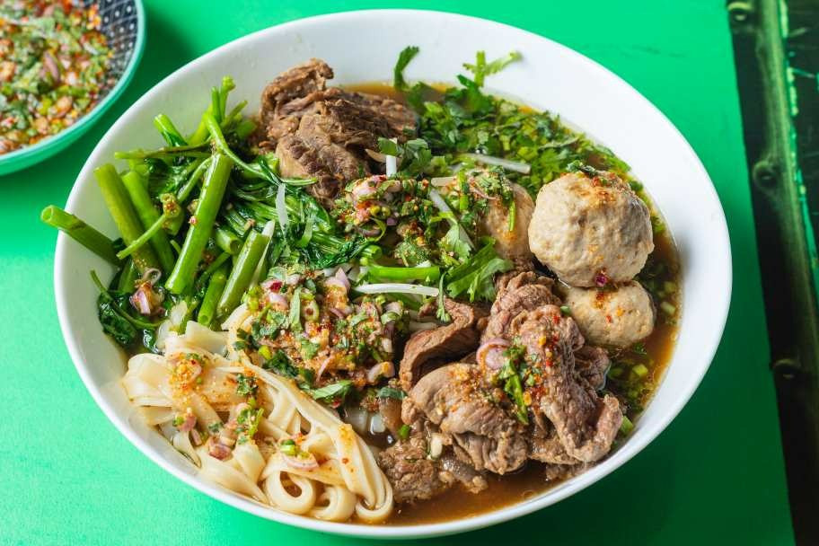

Home
Thai Boat Noodles

How to make Thai Boat Noodles
“Guay Tiew” (or Kuai Tiao) is Thai for “noodles” and noodles there are a’ plenty in Thailand. “Ruea” means boat which is where it was traditionally made and served.
The deep dark beef stock, blood, carbs, herbs, all the vitamins, minerals, and amino acids in between are perfect for your palate.
Ingredients
- 200g rice noodles, dry, small size (soak for 8 mins)
- 200g rib eye steak
- 1 handful morning glory
- 1 handful beansprouts
The Meatballs
- 200g pork mince
- 2 tbsp panko breadcrumbs
- Salt & pepper to season
- 1-2 tbsp water
The Soup
- 1kg pork bones
- 3-4 L water / chicken stock
- 1 large onion
- 6-10 cloves garlic
- 2 star anise
- 1 cinnamon stick
- 1 tbsp coriander seeds
- 1 tsp white peppercorns
- 3 pandan leaves (optional)
- 1 lemongrass stick
- 1 thumb sized piece galangal, finely sliced
- Handful coriander roots
The seasoning / Marinade (Melt together & use for marinade and stock)
- 1 tbsp fermented soybean paste
- 2 ½ tbsp light soy sauce
- 2 tbsp dark soy sauce
- 1 tbsp sweet soy sauce
- 1 tbsp rock sugar
- 1 ½ tsp sea salt
- ½ ladle chicken stock
Nam Jim Jaew
- 1 tbsp toasted rice powder (made from grains of dry Jasmine rice, toasted in a dry pan)
- 2 tsp dried red chilli flakes
- ½ red onion, finely sliced
- 1 spring onion, finely sliced into rings
- Small handful of coriander leaves, picked
The Sauce
- 2 tbsp fish sauce
- 1 tbsp palm sugar
- Juice of half a lime
Instructions
Preparation
MAKE THE NAM JIM JAEW
- Toast the dry red chillies on a low heat for 1-2 minutes, and then blitz in a spice grinder into a fine powder. Toast your dry rice in the same way and then pound it in a pestle and mortar.
- Prepare the red onion, spring onion and coriander and add to a bowl with a couple of tsp. of the ground chilli. Then add ‘The Sauce’ ingredients to the spices and mix together until all the palm sugar has melted. To finish it off, scatter the toasted rice powder over the top.
BROTH
- Blanch your pork bones to get all the fatty impurities out. Drain the water and add the chicken stock to the pot with the bones, along with the rest of the soup ingredients (roughly chopped). Let it bubble away for at least 2-3 hours.
- Cut the morning glory into rough chunks. Place the soybeans into a pestle and mortar and bash into a paste. Now bash in the rest of the seasoning ingredients. Slice the steak into thin slices and add a spoon of the seasoning mix to marinade. Add the rest of the seasoning mix to the soup.
Cooking
Make the Meatballs
- Add the meatball ingredients to a blender and blitz for 2 minutes. Roll into bite size meatballs. After 3-4 hours drain the soup, saving the meat from the bones, and add the meatballs to the soup. They will float to the top when ready.
Assemble
- Place the soaked noodles into the soup for a minute to warm through. Blanch the beansprouts and morning glory and set aside. Finally, cook the sliced steak in the soup until medium rare.
- Place the shredded meat, meatballs, bean sprouts, morning glory and steak on top of the noodles, and top with the soup . Garnish with coriander, and nam jim jaew.
Back to top